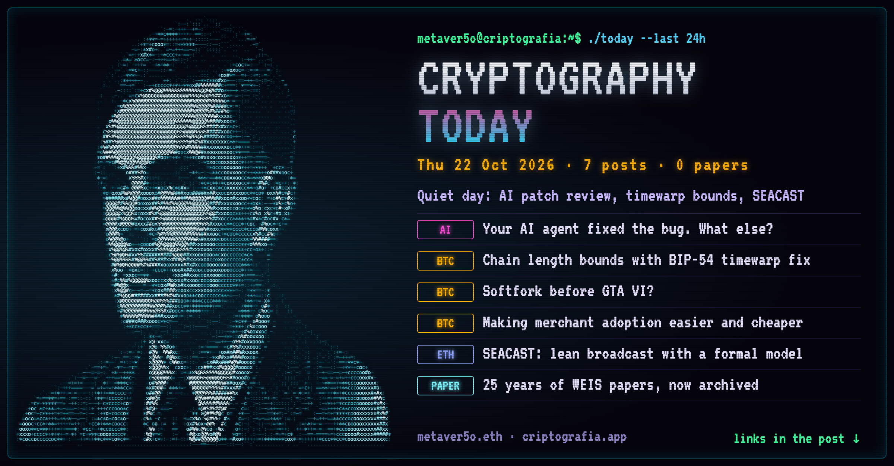
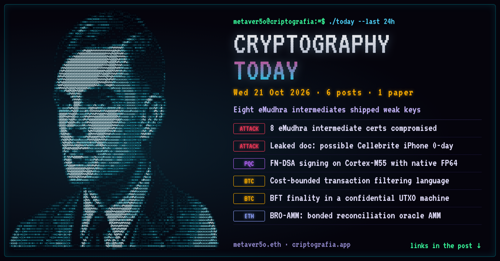
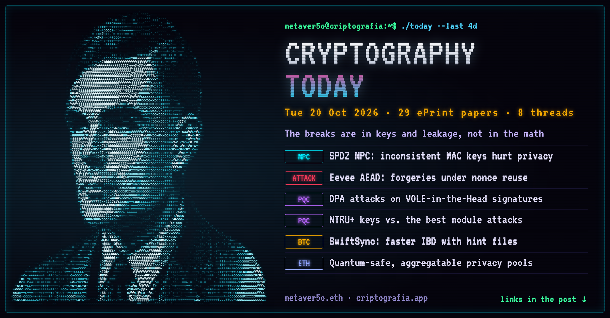
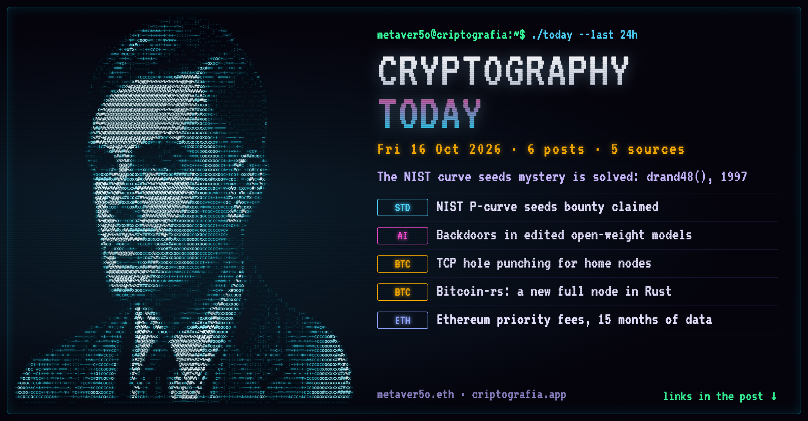
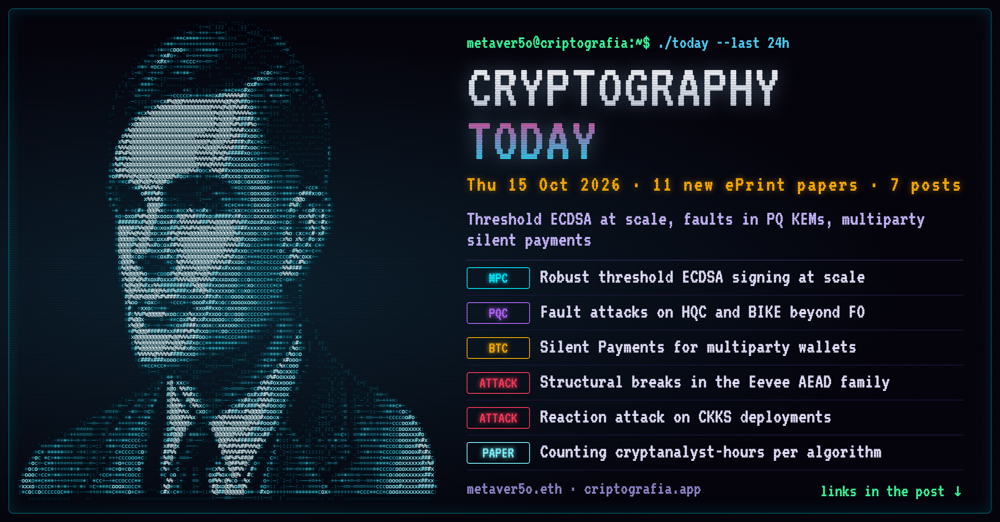
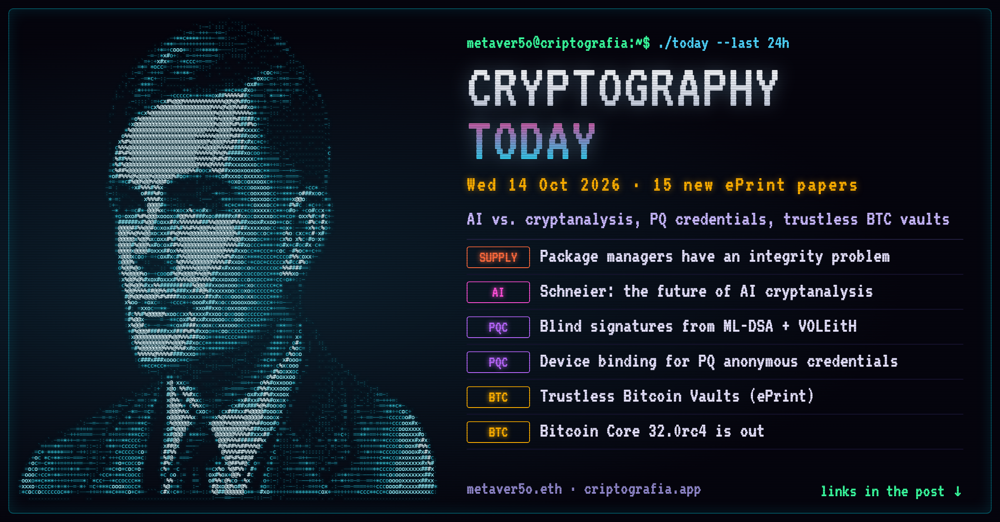

CRYPTOGRAPHY TODAY
Daily roundup · 6 edition(s)
2026-10-22

Cryptography Today — Oct 22, 2026
A quiet day, led by Trail of Bits on the question every team using coding agents should ask: the agent fixed the bug, but what else did it change?
🔐 Security & attacks
• [LINK] Your AI agent fixed the bug, but what else did it change?
₿ Bitcoin
• [LINK] Bounds on chain length with BIP-54 timewarp fixes
• [LINK] Softfork before GTA VI?
• [LINK] Projects to make merchant adoption easier and cheaper
Ξ Ethereum research
• [LINK] SEACAST: lean broadcast with an executable spec and formal model
📄 Reading list
• [LINK] 25 years of WEIS (economics of security) papers, archived
What did I miss? Drop it below.
#Cryptography #PostQuantum #Bitcoin #ZeroKnowledge
Cryptography Today — Oct 22, 2026
A quiet day, led by Trail of Bits on the question every team using coding agents should ask: the agent fixed the bug, but what else did it change?
🔐 Security & attacks
• Your AI agent fixed the bug, but what else did it change? — https://blog.trailofbits.com/2026/10/21/your-ai-agent-fixed-the-bug-but-what-else-did-it-change/
₿ Bitcoin
• Bounds on chain length with BIP-54 timewarp fixes — https://delvingbitcoin.org/t/bounds-on-chain-length-with-bip-54-timewarp-fixes/2899
• Softfork before GTA VI? — https://delvingbitcoin.org/t/softfork-before-gta-vi/2913
• Projects to make merchant adoption easier and cheaper — https://delvingbitcoin.org/t/several-projects-to-make-merchant-adoption-easier-and-cheaper/2967
Ξ Ethereum research
• SEACAST: lean broadcast with an executable spec and formal model — https://ethresear.ch/t/seacast-fast-lean-broadcast-for-ethereum-with-an-executable-spec-and-a-formal-model/26167
📄 Reading list
• 25 years of WEIS (economics of security) papers, archived — https://www.schneier.com/blog/archives/2026/10/workshop-on-economics-and-information-security-weis-archive.html
What did I miss? Drop it below.
#Cryptography #PostQuantum #Bitcoin #ZeroKnowledge
2026-10-21

Cryptography Today — Oct 21, 2026
Eight eMudhra intermediate certificates turned out to use weak keys: a reminder that a CA is only as strong as its worst key ceremony.
🔐 Security & attacks
• [LINK] 8 eMudhra certificates are compromised (Cloudflare)
• [LINK] Possible new Cellebrite iPhone radio zero-day
🧮 Post-quantum
• [LINK] FN-DSA on Arm Cortex-M55 with native FP64 and Helium
₿ Bitcoin
• [LINK] Cost-bounded transaction filtering language
• [LINK] BFT finality in a confidential UTXO state machine
• [LINK] TCP hole punching for nodes behind home NATs
Ξ Ethereum research
• [LINK] BRO-AMM: a bonded reconciliation oracle AMM
What did I miss? Drop it below.
#Cryptography #PostQuantum #Bitcoin #ZeroKnowledge
Cryptography Today — Oct 21, 2026
Eight eMudhra intermediate certificates turned out to use weak keys: a reminder that a CA is only as strong as its worst key ceremony.
🔐 Security & attacks
• 8 eMudhra certificates are compromised (Cloudflare) — https://blog.cloudflare.com/emudhra-certificate-compromise/
• Possible new Cellebrite iPhone radio zero-day — https://www.schneier.com/blog/archives/2026/10/possible-new-cellebrite-iphone-radio-zero-day.html
🧮 Post-quantum
• FN-DSA on Arm Cortex-M55 with native FP64 and Helium — https://eprint.iacr.org/2026/2559
₿ Bitcoin
• Cost-bounded transaction filtering language — https://delvingbitcoin.org/t/cost-bounded-transaction-filtering-language/2966
• BFT finality in a confidential UTXO state machine — https://delvingbitcoin.org/t/evaluating-deterministic-bft-finality-within-a-confidential-utxo-state-machine/2965
• TCP hole punching for nodes behind home NATs — https://delvingbitcoin.org/t/tcp-hole-punching-for-bitcoin-nodes-behind-home-nats/2497
Ξ Ethereum research
• BRO-AMM: a bonded reconciliation oracle AMM — https://ethresear.ch/t/bro-amm-a-bonded-reconciliation-oracle-amm-as-a-low-risk-defi-primitive/26138
What did I miss? Drop it below.
#Cryptography #PostQuantum #Bitcoin #ZeroKnowledge
2026-10-20

Cryptography Today — Oct 20, 2026
A new paper shows how inconsistent MAC keys can compromise privacy in SPDZ-family MPC: this week the breaks are in keys and leakage, not in the math.
🔐 Security & attacks
• [LINK] Off-Key: inconsistent MAC keys compromise privacy in SPDZ-family MPC
• [LINK] Eevee: deterministic forgeries against nonce-misuse security
• [LINK] DPA-style attacks on VOLE-in-the-Head signature schemes
🧮 Post-quantum
• [LINK] How secure are NTRU+ keys? The best module attacks
• [LINK] Sparse secrets, dense problems: masking HQC in hardware
• [LINK] PQ anonymity for stealth address protocols
• [LINK] Faster, aggregatable and quantum-safe privacy pools
₿ Bitcoin
• [LINK] SwiftSync: speeding up IBD with pre-generated hints (PoC)
• [LINK] Implicit deletions and improvements in Utreexo IBD
🤖 AI & security
• [LINK] Training AIs to solve CAPTCHAs
What did I miss? Drop it below.
#Cryptography #PostQuantum #Bitcoin #ZeroKnowledge
Cryptography Today — Oct 20, 2026
A new paper shows how inconsistent MAC keys can compromise privacy in SPDZ-family MPC: this week the breaks are in keys and leakage, not in the math.
🔐 Security & attacks
• Off-Key: inconsistent MAC keys compromise privacy in SPDZ-family MPC — https://eprint.iacr.org/2026/2533
• Eevee: deterministic forgeries against nonce-misuse security — https://eprint.iacr.org/2026/2518
• DPA-style attacks on VOLE-in-the-Head signature schemes — https://eprint.iacr.org/2026/2519
🧮 Post-quantum
• How secure are NTRU+ keys? The best module attacks — https://eprint.iacr.org/2026/2527
• Sparse secrets, dense problems: masking HQC in hardware — https://eprint.iacr.org/2026/2509
• PQ anonymity for stealth address protocols — https://ethresear.ch/t/pq-anonymity-for-stealth-address-protocol/26094
• Faster, aggregatable and quantum-safe privacy pools — https://ethresear.ch/t/faster-aggregatable-and-quantum-safe-privacy-pools/26163
₿ Bitcoin
• SwiftSync: speeding up IBD with pre-generated hints (PoC) — https://delvingbitcoin.org/t/swiftsync-speeding-up-ibd-with-pre-generated-hints-poc/1562
• Implicit deletions and improvements in Utreexo IBD — https://delvingbitcoin.org/t/implicit-deletions-and-improvements-in-utreexo-ibd/2881
🤖 AI & security
• Training AIs to solve CAPTCHAs — https://www.schneier.com/blog/archives/2026/10/training-ais-to-solve-captchas.html
What did I miss? Drop it below.
#Cryptography #PostQuantum #Bitcoin #ZeroKnowledge
2026-10-16

Cryptography Today — Oct 16, 2026
The NIST elliptic curve seeds are no longer a mystery: the bounty has been claimed, and they turn out to be drand48() output seeded with a 1997–98 timestamp, not the hash of a secret phrase.
🔐 Security & attacks
• [LINK] NIST curve seeds bounty claimed: it was drand48()
• [LINK] Backdooring open-weight AI models
₿ Bitcoin
• [LINK] TCP hole punching for nodes behind home NATs
• [LINK] Bitcoin-rs: an independent full node in Rust
Ξ Ethereum research
• [LINK] Priority fees and tx classification, Jul 2025–Oct 2026
A quiet day otherwise. What did I miss? Drop it below.
#Cryptography #Bitcoin #Ethereum #AISecurity
Cryptography Today — Oct 16, 2026
The NIST elliptic curve seeds are no longer a mystery: the bounty has been claimed, and they turn out to be drand48() output seeded with a 1997–98 timestamp, not the hash of a secret phrase.
🔐 Security & attacks
• NIST curve seeds bounty claimed: it was drand48() — https://words.filippo.io/seeds-solved/
• Backdooring open-weight AI models — https://www.schneier.com/blog/archives/2026/10/backdooring-open-weight-ai-models.html
₿ Bitcoin
• TCP hole punching for nodes behind home NATs — https://delvingbitcoin.org/t/tcp-hole-punching-for-bitcoin-nodes-behind-home-nats/2497
• Bitcoin-rs: an independent full node in Rust — https://delvingbitcoin.org/t/bitcoin-rs-an-independent-bitcoin-full-node-written-in-rust/2918
Ξ Ethereum research
• Priority fees and tx classification, Jul 2025–Oct 2026 — https://ethresear.ch/t/measuring-priority-fees-positions-and-transaction-classification-of-ethereum-blocks-july-2025-to-october-2026/26156
A quiet day otherwise. What did I miss? Drop it below.
#Cryptography #Bitcoin #Ethereum #AISecurity
2026-10-15

Cryptography Today — Oct 15, 2026
Threshold ECDSA that stays robust with a third of signers malicious, built for bridge-scale signer sets, leads a quiet but useful day.
🔐 Security & attacks
• [LINK] Structural cryptanalysis of the Eevee AEAD family
• [LINK] Reaction attack on CKKS deployments
• [LINK] Measuring human cryptanalysis effort (via Schneier)
🧮 Post-quantum
• [LINK] Fault injection on HQC and BIKE beyond Fujisaki-Okamoto
• [LINK] FAEST signatures on GPUs
₿ Bitcoin
• [LINK] Silent Payments for multiparty wallets
• [LINK] Open-source multisig coordinator with a live signet demo
📄 New papers (IACR ePrint)
• [LINK] Robust ECDSA threshold signing at scale
• [LINK] Speeding up sumcheck using algebraic geometry
What did I miss? Drop it below.
#Cryptography #PostQuantum #Bitcoin #ZeroKnowledge
Cryptography Today — Oct 15, 2026
Threshold ECDSA that stays robust with a third of signers malicious, built for bridge-scale signer sets, leads a quiet but useful day.
🔐 Security & attacks
• Structural cryptanalysis of the Eevee AEAD family — https://eprint.iacr.org/2026/2496
• Reaction attack on CKKS deployments — https://eprint.iacr.org/2026/2490
• Measuring human cryptanalysis effort (via Schneier) — https://www.schneier.com/blog/archives/2026/10/measuring-human-cryptanalysis-effort.html
🧮 Post-quantum
• Fault injection on HQC and BIKE beyond Fujisaki-Okamoto — https://eprint.iacr.org/2026/2492
• FAEST signatures on GPUs — https://eprint.iacr.org/2026/2489
₿ Bitcoin
• Silent Payments for multiparty wallets — https://delvingbitcoin.org/t/silent-payments-for-multiparty-wallets/2960
• Open-source multisig coordinator with a live signet demo — https://delvingbitcoin.org/t/open-source-bitcoin-multisig-coordinator-shared-signing-queue-hardware-wallets-live-signet-demo/2957
📄 New papers (IACR ePrint)
• Robust ECDSA threshold signing at scale — https://eprint.iacr.org/2026/2493
• Speeding up sumcheck using algebraic geometry — https://eprint.iacr.org/2026/2494
What did I miss? Drop it below.
#Cryptography #PostQuantum #Bitcoin #ZeroKnowledge
2026-10-14

Cryptography Today — Oct 14, 2026
AI is coming for cryptanalysis (or is it?), post-quantum credentials get device binding, and someone wants Bitcoin vaults without trusted bridges.
🔐 Security & attacks
• [LINK] Package managers have an integrity problem (25 managers tested)
• [LINK] The future of AI cryptanalysis
🧮 Post-quantum
• [LINK] Issuer-hiding blind signatures from ML-DSA and VOLE-in-the-Head
• [LINK] Nowhere Man: device binding for post-quantum anonymous credentials
• [LINK] What does "post-quantum" mean for a Bitcoin L2 settling on a non-PQ L1?
₿ Bitcoin
• [LINK] Trustless Bitcoin Vaults
• [LINK] Bitcoin Core 32.0rc4 is now available
📄 Also on ePrint
• [LINK] Secret sharing from non-extractable randomness
• [LINK] Tamper-sensing meshes in payment terminals
What did I miss? Drop it below.
#Cryptography #PostQuantum #Bitcoin #ZeroKnowledge #AppliedCryptography
Cryptography Today — Oct 14, 2026
AI is coming for cryptanalysis (or is it?), post-quantum credentials get device binding, and someone wants Bitcoin vaults without trusted bridges.
🔐 Security & attacks
• Package managers have an integrity problem (25 managers tested) — https://blog.trailofbits.com/2026/10/14/package-managers-have-an-integrity-problem/
• The future of AI cryptanalysis — https://www.schneier.com/blog/archives/2026/10/the-future-of-ai-cryptanalysis.html
🧮 Post-quantum
• Issuer-hiding blind signatures from ML-DSA and VOLE-in-the-Head — https://eprint.iacr.org/2026/2473
• Nowhere Man: device binding for post-quantum anonymous credentials — https://eprint.iacr.org/2026/2472
• What does "post-quantum" mean for a Bitcoin L2 settling on a non-PQ L1? — https://delvingbitcoin.org/t/what-does-post-quantum-actually-mean-for-a-bitcoin-l2-when-settlement-still-happens-on-a-non-pq-l1/2715
₿ Bitcoin
• Trustless Bitcoin Vaults — https://eprint.iacr.org/2026/2466
• Bitcoin Core 32.0rc4 is now available — https://delvingbitcoin.org/t/bitcoin-core-32-0rc4-is-now-available/2958
📄 Also on ePrint
• Secret sharing from non-extractable randomness — https://eprint.iacr.org/2026/2477
• Tamper-sensing meshes in payment terminals — https://eprint.iacr.org/2026/2475
What did I miss? Drop it below.
#Cryptography #PostQuantum #Bitcoin #ZeroKnowledge #AppliedCryptography